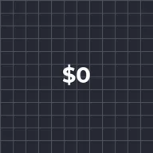
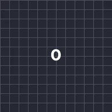

Op-/aftellen

Wijzigt elk getal in een tekstlaag: vermenigvuldigt het en telt er iets bij op, dus met keyframes op Vermenigvuldigen van 0% tot 100% tel je op tot het getal dat je hebt getypt. Woorden rond de getallen blijven zoals ze zijn.
Instellingen
| Instelling | Type | Bereik | Standaard |
|---|---|---|---|
| Optellen | Getal | -100000 tot 100000 | 0 |
| Vermenigvuldigen | Getal | -200% tot 200% | 100% |
| Decimalen | Keuze | Zoals getypt, 0, 1, 2, 3 | Zoals getypt |
| Duizendtallen | Keuze | 1000.5, 1,000.5, 1.000,5, 1 000.5 | 1000.5 |
Voorinstellingen
Kies er een op de detailpagina van het effect in de Effectenbibliotheek. Elke voorinstelling is een kant-en-klare instelling die je daarna nog kunt aanpassen.

Optellen